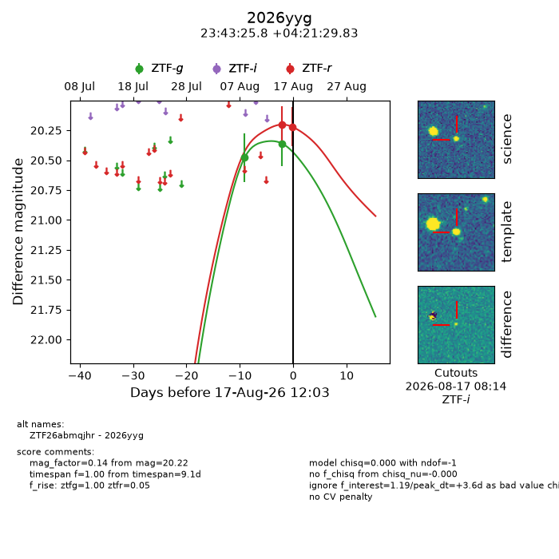
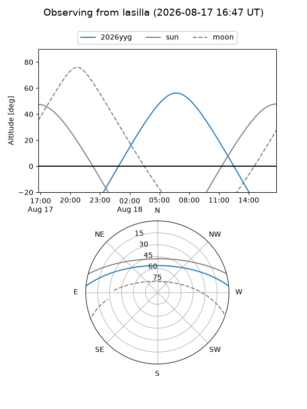
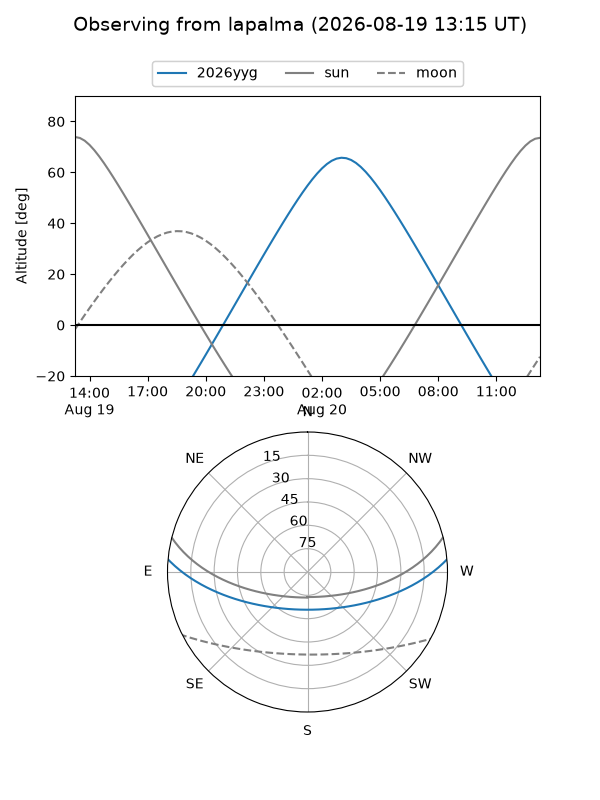
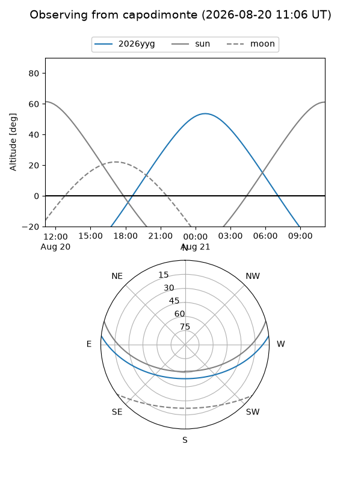
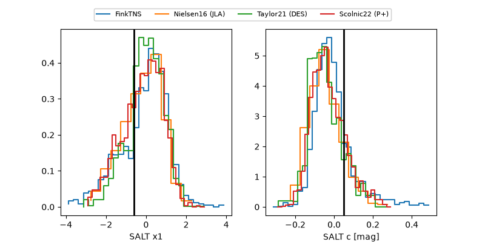

2026yyg
Target 2026yyg at 2026-08-17 12:06
Aliases and brokers:
FINK-ZTF: ztf.fink-portal.org/ZTF26abmqjhr
Lasair-ZTF: lasair-ztf.lsst.ac.uk/objects/ZTF26abmqjhr
ALeRCE-ZTF: alerce.online/object/ZTF26abmqjhr
YSE-PZ: ziggy.ucolick.org/yse/transient_detail/2026yyg
TNS name: wis-tns.org/object/2026yyg
Direct TNS query: direct search
alt names
ZTF26abmqjhr (ztf,fink_ztf)
2026yyg (tns,yse)
Coordinates:
equatorial (ra, dec) = 355.8577,+4.35829
equatorial (HMS+DMS) = 23:43:25.85,+04:21:29.83
galactic (l, b) = (92.8056,-54.48654)
Flags:
TNS type: nan
peak dt: +3.6
Photometry:
last ztfg=20.36, ztfr=20.22
2 ztfg, 2 ztfr detections
Lightcurve

Visibility



Additional plots
